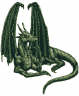

Forums galactiques > Taverne galactique : lieu de discussion informel > Caisse galactique
| shandoha1  20/02 ETU 02:57 | me too !! |
freestyler 20/02 ETU 10:35 | J'ai également reçu les leems |
shadow17 20/02 ETU 11:11 | je suis independant |
JabberWock 22/02 ETU 22:56 | * Le Commandant JabberWock entra dans la Taverne Galactique avec une femme à ses coté(e)s. La suivante portait la chevelure du Commandant dans un écrin de soie, ses cheuveux avait l'air plus long que le Commandant ne l'était. * * Le Commandant JabberWock était habillé d'une pélerine ostère noire, violette et blanche représentant manifestement une femme allongée sur le ventre, richement vêtue, avec une chevelure chatoyante. Le Commandant ne laissait entrevoir que le bas du visage et le cou. * * La suivante prononça quelques mots discrètement a l'oreille de son Commandant qui se mit à avancer en direction du Commandant Shoubenigourath, s'asseya à ses cotés, sortit une coupelle originale très peu profonde ainsi qu'une bouteille de petite taille, tout deux dans un matériaux aux allures primitives. Le Commandant JabberWock commença à verser un liquide sentant très fort l'alcool dans la coupelle... * "Holic" dit-elle * <Elle> ? Rien n'était moins sur. Les parties de son corp que l'on pouvait apercevoir avait des traits finements scultés aux allures féminines mais le doute s'installait vite quant à savoir le sexe de cet individu. * * Le Commandant JabberWock commenca à boire quelques gorgées de ce liquide, visiblement avec délectation car un léger sourrir est apparu sur son visage, comme de la satisfaction. * "Très cher Commandant Shoubenigourath !", s'exclama le Commandant JabberWock d'une voix insondable comme l'univers. " Je suis ici présent au nom des Mugenjyites et Mugenjyates, peuple de la planète Mugenjô, pour soliciter l'aide que propose la Caisse Galactique. L'empire que je viens de prendre en main n'est affilié à aucun autre et ne désire que propérer dans la paix. En effet, les enfants de Mugenjô aurait besoin de votre soutien pour étendre son empire économique, commencer à pouvoir commercer avec d'autres peuples à grande échelle ainsi que pouvoir se défendre contre d'éventuelles aggression extérieures que nous pourrions déplorer. Comme vous le savez, la mise en place d'un tel projet nécessite un capital relativement important que nous vous demandons de nous accorder. Les enfants de Mugenjô comptent sur vous pour atteindre ses objectifs le plus rapidement possible ! De la part de mon peuple : Merci de votre attention." * A la fin de ces mots, le Commandant JabberWock avala le reste de sa coupelle, ranga les accéssoires dans sa pélerine et regarda en coin sa suivante pour ensuite se retourner vers le Commandant Shoubenigourath qui, dans l'incapacité de voir ses yeux, se douta que son détracteur le fixait. Néanmoins le sourrire de satisfaction n'avait pas disparu. * * La suivante n'a pas sourcillée une seule fois, ne laissant transparaître aucune émotion, à tel point qu'il fallait une attention soutenue juste pour la voir cligner des yeux. Tout deux attendaient la réponse du Commandant Shoubenigourath * (C'est mon premier role-play alors je le fais dans un endroit peu formel ;]. Ne soyez pas trop rigide si il-vous-plait et si vous avez des critique sur mon RP faites les moi savoir en MP que je puisse m'améliorer ^^. Merci d'avance.) |
futursp 22/02 ETU 23:31 | moi je trouve qu'il est bien fait, surement ca sera pas de l'avis de tout le monde sinon l'univers serait trop beau, mais moi je vous le dit, Bien joué ! (meme si c'est aps trop un jeu) |
jerome le retour 22/02 ETU 23:53 | Je suis aussi un jeune commandant indépendant |
futursp23/02 ETU 23:33 | Je recois aucune aide, je suis independant donc (désolé j'avais oubliez de le dire au dernier message) |
K'Lim Ero 24/02 ETU 09:01 | La créature regardait l'assemblée de ses yeux rouges incandescents. Grand, il portait des vêtements réhaussant sa stature imposante. Une écharpe de couleurs vives ornait sa poitrine tandisu qu'une lame était passée dans sa ceinture. "Messieurs, Le Régime Narn vient se présenter ici, remerciant l'auteur de cette aide inespérée par avance. Nous commençons à explorer la Galaxie depuis quelques jours et découvrons les humains avec curiosité. Marchands, les Narns passent le salut à ceux qui souhaitent, sous peu, profiter de nos propositions commerciales. L'occupation de notre planète et son pillage par les Centauri nous laissent peu de ressources utilisables. Nous serions reconnaissants de profiter de cette aide aussi inattendue que bienvenue. K'lim ero, Membre du 3ème cercle et Ambassadeur du Régime Narn." |
Khimaira 25/02 ETU 03:28 | Un commandant inconnu et aux traits indiscernable entra dans la Taverne et dit : Voici Khimaira, humble et pauvre commandant. Je suis neutre. Je viens d'etre victime de dommages collateraux dans un affrontement qui ne m'interesse pas. Je suis pour la paix et pour la desescalade armementielle, sinon pour le desarmement. Et j'ai besoin de ce don de leems. Merci. Au revoir. Et le commandant avait deja disparu. Etait-il reel? Ou n'etait-ce qu'une chimere... |
Forums galactiques > Taverne galactique : lieu de discussion informel > Caisse galactique